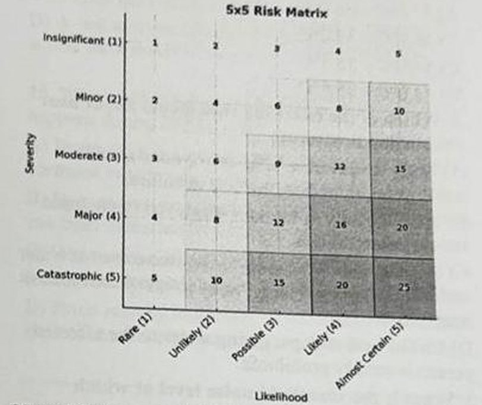

ES 412 OCCUPATIONAL HEALTH AND SAFETY II – FINAL EXAM – JUNE 2026
This examination is comprised of 25 multiple-choice questions. Each question is followed by four possible answers, of which only one is correct. The maximum time for this examination is 40 minutes.
Sınavın yalnızca S12-S21 fotoğrafları mevcut; S1-11 ve S22-25 yok.
S16-17 için 5x5 risk matrisi şekli kırpıldı (img/es412-final-2026-06/q16.jpg).
S18-21 senaryo soruları; senaryo metni 'passage' olarak ayrıldı. Fotoğraflar eğik/çekim kalitesi orta; metin okunabilir.
İşaretleme yok; cevaplar çözüldü.
Soru 1–11 kaynaklarda yok. Fotoğraflarda yok
Soru 22–25 kaynaklarda yok. Fotoğraflarda yok
Bir şıkkı işaretlediğinizde doğru cevap görünür. Seçiminiz bu tarayıcıda saklanır.
0 / 10 cevaplandı
12. Which statement about asbestos is correct?
Doğru cevap: C · Çözüm (kaynakta işaret yok, doğrulanmamış)
13. What is the most critical safety hazard associated with flickering light around moving machinery?
Doğru cevap: A · Çözüm (kaynakta işaret yok, doğrulanmamış) · Stroboskopik etki.
14. Which statement about the correct positioning of portable straight or extension ladders is correct?
Doğru cevap: A · Çözüm (kaynakta işaret yok, doğrulanmamış) · 4'e 1 kuralı (yaklaşık 75 derece). C şıkkı standartta genelde yaklaşık 1 m olduğundan yanlış.
15. What is the key difference between a Preliminary Hazard Analysis (PHA) and a Preliminary Hazard List (PHL)?
Doğru cevap: B · Çözüm (kaynakta işaret yok, doğrulanmamış)
16. A worker operates a machine with a moderate chance (possible, score = 3) of mechanical failure leading to severe injury (critical, score = 4). According to a standard 5×5 risk matrix, how should this risk be classified?

Doğru cevap: C · Çözüm (kaynakta işaret yok, doğrulanmamış) · Üst başlık: 'Answer questions 16 and 17 by referencing this matrix.' Skor 3×4=12; matriste orta-koyu gri bölge. Görselde yalnız şekil var, öğrenci işareti yok.
17. A chemical spill in a laboratory has a low likelihood (2: Unlikely), if it happens, the consequences would be catastrophic (5: multiple fatalities possible). Based on the 5×5 risk matrix provided, how should this risk be classified?
Doğru cevap: C · Çözüm (kaynakta işaret yok, doğrulanmamış) · Skor 2×5=10; matriste açık-orta gri.
18. SCENARIO — Workers in a metal-stamping plant are exposed to continuous noise levels of 102 dB(A). Measurements confirm all workers exceed the maximum action limit. The plant manager lists the following options under consideration:
18. Rank these four options (i–iv) correctly from HIGHEST to LOWEST in the hierarchy of control measures.
(i) Replace the old pneumatic stamping presses with quieter electric servo-presses (78 dB).
(ii) Build acoustic enclosures around each press.
(iii) Rotate workers between noisy and quiet areas every two hours.
(iv) Provide each worker with earmuffs rated NRR 29.
Doğru cevap: B · Çözüm (kaynakta işaret yok, doğrulanmamış) · Substitution > engineering > administrative > PPE.
19. SCENARIO — An OHS manager at a chemical plant has completed a Preliminary Hazard Analysis (PHA) and identified a high-risk scenario: a pressurized solvent storage tank could rupture, causing fire and explosion. The risk score is rated CRITICAL (highest severity × high probability). The manager now proposes the following corrective actions:
19. According to the hierarchy of control measures and the ALARP principle, which action should be PRIORITISED first?
(i) Demolish the above-ground tank and store the solvent in sealed underground tanks with automatic leak detection.
(ii) Reduce the maximum fill volume to 60% of tank capacity.
(iii) Require all workers within 50 m of the tank to wear flame-resistant coveralls and face shields.
(iv) Conduct weekly visual inspections of the tank and pressure gauges.
Doğru cevap: D · Çözüm (kaynakta işaret yok, doğrulanmamış) · A şıkkının başı fotoğrafta parmakla kapalı ('A)' kısmen görünüyor).
20. SCENARIO — A forestry company cannot afford to replace its fleet of chainsaws immediately. The OHS manager has a budget to implement ONE additional control measure on top of the existing anti-vibration gloves already in use.
20. Which single measure would represent the greatest IMPROVEMENT in the hierarchy level (i.e., moving to a higher control level) compared to gloves alone?
Doğru cevap: A · Çözüm (kaynakta işaret yok, doğrulanmamış)
21. SCENARIO — Workers at a food processing facility frequently slip on wet floors near washing stations. Incident records show 12 same-level fall accidents in the past year. The floors are smooth ceramic tiles. Water accumulates from continuous rinsing operations throughout the shift. Currently, workers are warned with wet-floor signs.
21. The facilities manager proposes four options. Which option is HIGHEST in the hierarchy of control measures?
Doğru cevap: A · Çözüm (kaynakta işaret yok, doğrulanmamış)